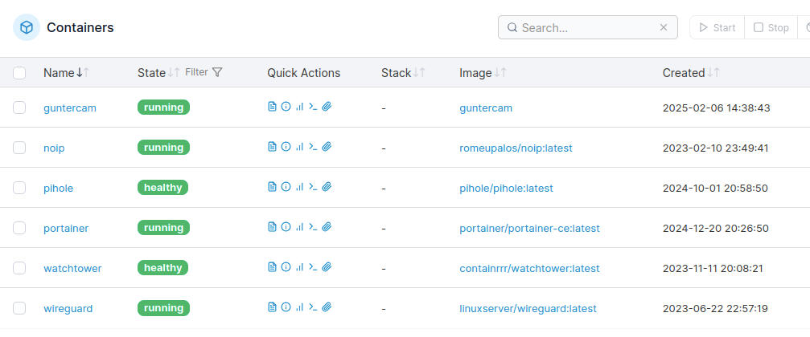
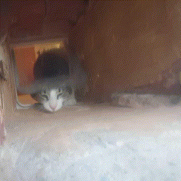

Pet camera
Pet camera with movement detection and automatic picture sharing via chat. Hosted locally on a Raspberry Pi using Docker.

Stack


Devlog: Pet camera
This project started as a weekend project; the idea was to take a picture of the family cat going in and out of the house through the cat door.
For the camera I originally thought of buying a PiCam, but that would also require a Raspberry sitting outside and I would need to somehow make everything waterproof, so I went in another direction.
I decided to use an old Android phone acting as an IP Camera (there are many apps for precisely
this, I settled for this one.
Water proofing this would be much simpler as the phone by itself already is waterproof (to a
degree), I just needed to connect it to electricity for continuous streaming.
For the backend I decided to go with a Raspberry Pi 4 I already had running with other services, the only constraint would be that I needed to develop an algorithm that would not take too many resources.
So, I needed to figure out a way to process these photos, somehow detect when a movement happened, and send this picture to my phone for ease of viewing.
Capturing and fetching images
The android applications provides a frontend HTTP configuration interface, as well as some endpoints, one of them being for taking a still photo.
It offers transit encryption through HTTPS and password protection. This was not strictly needed
as the images only travel through the local network, but I enabled it to be on the safe
side.
The Python code to fetch the images is fairly simple, with the only observation being that the
certificate is not verified as it is self-signed by the android application:
def getImage():
response = requests.get(secrets.ENDPOINT, auth=(secrets.USERNAME, secrets.PASSWORD),
verify=False)
if response.status_code == 200:
return Image.open(BytesIO(response.content))
(simplified code)
Main Loop
The program consists of a while loop that runs forever. It starts by taking a picture and comparing it with the one taken just before. If the difference score suprasses a threshold, then it takes some more pictures consecutively, creates a GIF animation and sends them using the Telegram API
OpenCV: Detection Algorithms
To detect when a movement in front of the camera happened I decided to use OpenCV for its simplicity and good integration with Python.
At first I developed a very single algorithm that took the two images, downscaled them and effectively calculated the sum of the differences, pixel by pixel.
This algorithm worked well but it was highly sensitive to changes in lightning. Setting the threshold very high to try to compensate for this would result in "False Negatives" (movement not being detected)
My second approach was to try a more complex approach in which different operations to remove noise, fill in small gaps and detect shape contour movement were performed to the difference image.
This resulted in much better detections. With the threshold set to 5% I got almost no False Positives and 0 False Negatives.
I was expecting to expand on this by further processing the images to remove shadows and different lightning artifacts, but this was not necessary and would add extra complexity and resource utilization.
I also did consider implementing a pre-trained ML model for object recognition, but again this didn't end up being needed and would have required much more resource utilization.
Telegram
After having a movement detected and the GIF composed of the images leading to that detection, as well as some after the fact, this GIF is then sent to a telegram group Chat through the API.
The code consists of an async function that shares the GIF to a given group chat. The secrets are stored in a secrets.py file, of which there is a template in the github repo, for reference
Docker
Once I had the script working and I checked the messages were delivered correctly, I decided to Dockerize the whole thing for better management, as the rest of the services on this Raspberry Pi already run in Docker.
Building the Docker image took quite a bit of time, as some dependencies (Numpy and OpenCV especially) were quite heavy, and I decided to compile from source to have the most optimized version possible.
Once the Docker image was created, I transferred this Image to my Raspberry Pi and I ran it
docker load <./guntercam_v2.tar
docker run -it -d --name guntercam --restart unless-stopped

Screenshot of Portainer, a graphical interface for managing Docker containers through the browserResults
The system is quite robust as a whole. The only problem is that sometimes the Image grabber does return a non complete image, probably due to some sort of network error or lost packet.
This was easily fixed with discarding this image and continuing the execution. This happens fairly rarely, so I was not too concerned about it.
Overall, the performance impact on my Rpi is fairly tolerable (\~60% of continuous use on one of the four CPU cores), which allows the rest of the services to run with no problems whatsoever.

Resulting gif